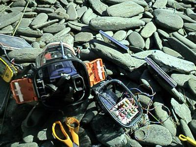

Ok.You have got 3 months trip in some wet or dusty wilderness
ahead of you and you want to take your (Sony) DV-camera with you. You are interested of pictorial information not some fartsy art. There
are some issues, I'mafraid:
Issue #1: You cannot trickle-charge lithium batteries, like regular NiMH-batteries. You have to get some huge10W/12V solar-charger (and hope for constant sunshine) and a car battery plug.
Issue #2: When you try to connect some other form of energy source into the power jack of a Sony it somehow recognizes that you are not using an authorized power source.
Issue #3:When the camera is kept *unpowered* in a Sony water-proof housing (eg SPK-TRC), it drains the batteries nevertheless.

And the answer is: -- You have to make a NiMH-battery-pack
of your own, regulate the voltage to 8.2 Volts and construct a power-switch.
'
(Ok. The clear glass window is self-made. Attached with fiberglass.)
Is it legal to adjust the regulator voltage with
diodes at the ground connector? (I did it anyway :-)
(c) Timo Noko 2003